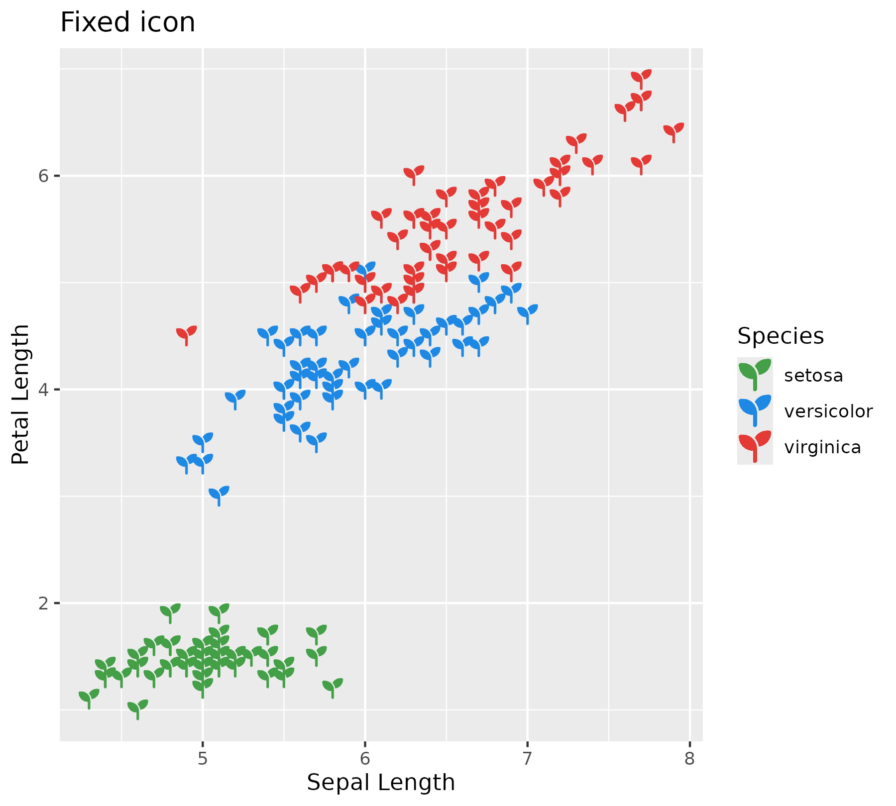
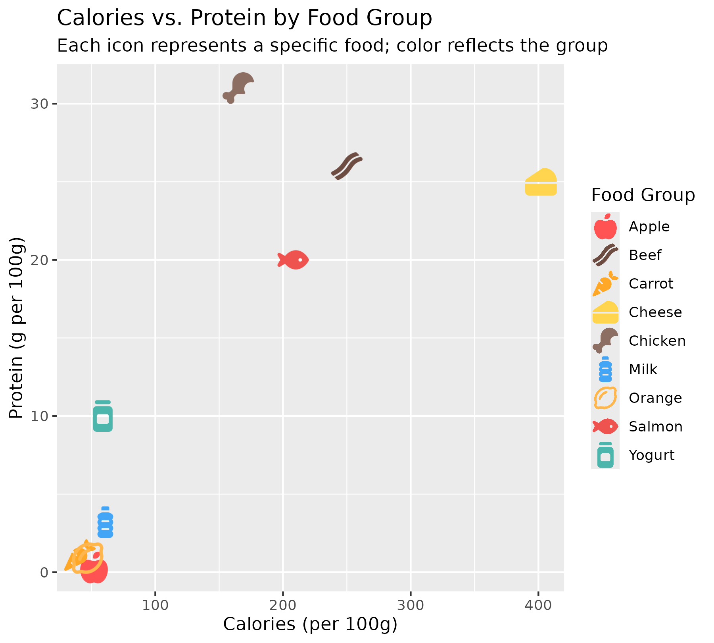

geom_icon_point() is a drop-in replacement for
geom_point() that renders Font Awesome icons instead of
dots. No preprocessing needed – use it directly with any data frame that
has x and y columns.
Fixed icon
Use the icon parameter (not aes()) to
display one icon across all points.
ggplot(iris, aes(x = Sepal.Length, y = Petal.Length, color = Species)) +
geom_icon_point(icon = "seedling", size = 1, dpi = 72) +
scale_color_manual(values = c(
setosa = "#43A047",
versicolor = "#1E88E5",
virginica = "#E53935"
)) +
labs(title = "Fixed icon", x = "Sepal Length", y = "Petal Length")
Icon per category
Map icon inside aes() to assign a different
icon to each group.
library(ggplot2)
library(ggpop)
df_food <- data.frame(
food = c("Apple", "Carrot", "Orange", "Chicken", "Beef", "Salmon",
"Milk", "Cheese", "Yogurt"),
calories = c(52, 41, 47, 165, 250, 208, 61, 402, 59),
protein = c(0.3, 1.1, 0.9, 31, 26, 20, 3.2, 25, 10),
group = c(rep("Fruit", 3), rep("Meat", 3), rep("Dairy", 3)),
icon = c("apple-whole", "carrot", "lemon",
"drumstick-bite", "bacon", "fish",
"bottle-water", "cheese", "jar")
)
ggplot(df_food, aes(x = calories, y = protein, icon = icon, color = food)) +
geom_icon_point(size = 2, dpi = 100) +
scale_color_manual(values = c(
"Apple" = "#FF5252", "Carrot" = "#FFA726", "Orange" = "#FFB74D",
"Chicken" = "#8D6E63", "Beef" = "#6D4C41",
"Salmon" = "#EF5350", "Milk" = "#42A5F5", "Cheese" = "#FFD54F",
"Yogurt" = "#4DB6AC"
)) +
labs(
title = "Calories vs. Protein by Food Group",
subtitle = "Each icon represents a specific food; color reflects the group",
x = "Calories (per 100g)",
y = "Protein (g per 100g)",
color = "Food Group"
)